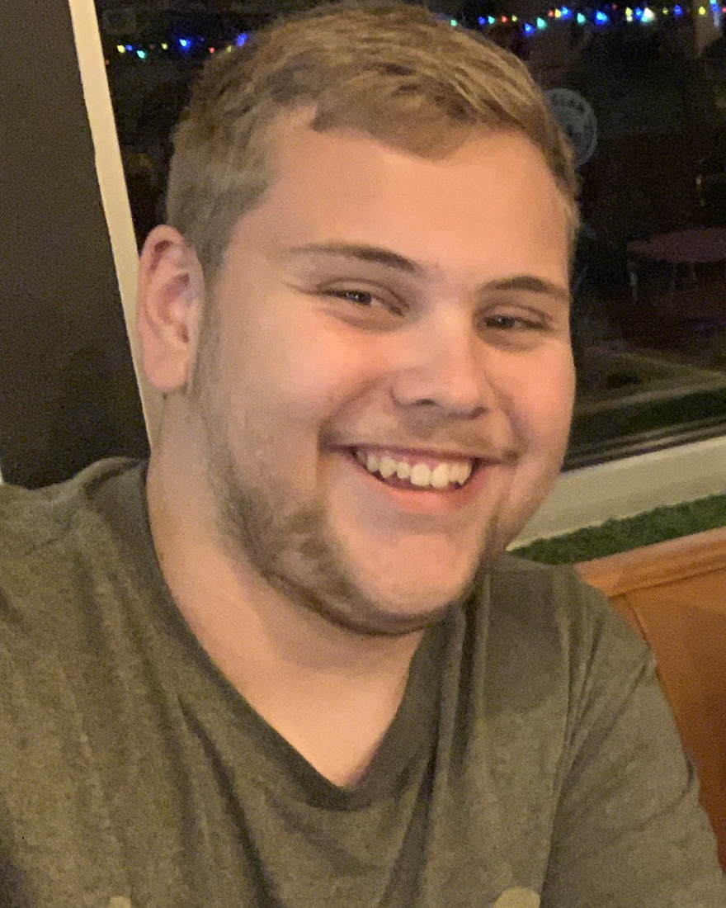

Quentin Smith
Technical Level Designer · Co-Founder, If It Works Studio{{ p.t }}
Experience
- {{ tl.when }} {{ tl.title }} {{ tl.sub }}
Skills & tools
My top 3 games
{{ g.num }}
{{ g.t }}
{{ g.why }}